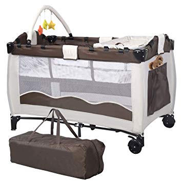

NESIOK.LT: Kūdikių prekės| drabužiai vaikams | drabužiai kūdikiams | kūdikio kraitelis | patalynė kūdikiams | batai vaikams
 Pagalba telefonu:+370 647 93599
Kalba: Lietuvių English Lietuvių English Lietuvių Kontaktai Parduotuvės Pristatymas Sąlygos ir taisyklės Prekių krepšelis 0Prekių krepšelis
Jūsų krepšelyje nėra prekių Prisijungti Drabužiai ir aksesuarai Kūdikiams (50...98cm) Drabužių kolekcijos Naujagimio kraiteliai Kepurytės kūdikiams, pirštinėlės Siaustinukai Kombinezonai Komplektai: šliaužtinukai ir marškinėliai Šliaužtinukai Marškinėliai Smėlinukai Smėlinukai-suknelės Kelnės su pėdutėmis Kelnės be pėdučių Džemperiai Romperiukai Mergaitėms (56...154cm) Suknelės Tunikos Sijonai Palaidinės Golfai Megztiniai Džemperiai, švarkeliai Bolero Timpos Kelnės, šortai Komplektai: smėlinukai+kelnytės Komplektai: džemperiai+kelnės Komplektas: tunikos+timpos Komplektai: palaidinės+timpos Pižamos, apatiniai Apatinės kelnaitės Kojinės Pėdkelnės Leginsai Blauzdinės Antkeliai ropojimui Kepurės Pirštinės Šalikai, movos, kaklaskarės Baleto šlepetės Berniukams (56...128cm) Džemperiai Megztiniai Marškiniai Marškinėliai Golfai Kelnės Šortai Komplektai: smėlinukai+kelnytės Komplektai: džemperiai+kelnės Komplektai: marškinėliai+šortai Pižamos, apatiniai Apatinės kelnaitės Antkeliai ropojimui Kojinės Pėdkelnės Kepurės Pirštinės Šalikai, movos, kaklaskarės Drabužėliai ANKSTUKAMS Krikšto rūbeliai, šventiniai drabužiai Krikšto rūbeliai mergaitėms Krikšto rūbeliai berniukams Varlytės Lauko drabužiai Kombinezonai, miegmaišiai Striukės Batai vaikams Batukai kūdikiams Batai berniukams Batai mergaitėms Batukai guminiu padu mergaitėms Batukai guminiu padu berniukams Miegui ir poilsiui Patalynė lovytėms 2 dalių patalynės komplektai lovytėms 3 dalių patalynės komplektai lovytėms 4 dalių patalynės komplektai lovytėms 5 dalių patalynės komplektai lovytėms 6 dalių patalynės komplektai lovytėms Patalai lovytėms Pagalvėlės Paklodės su guma Puošnios paklodės Apsaugos lovytėms Užuolaidėlės lovytėms, baldakimai Patalynė lopšiukams 2 dalių patalynės komplektai lopšiukams 6 dalių patalynės komplektai lopšiukams 7 dalių patalynės komplektai lopšiukams Paklodės su guma lopšiukams Pledukai Vokeliai Miegmaišiai Lizdeliai kūdikiams Vonios kambarys Rankšluosčiai Servetėlės, vystyklai, paklotai Flaneliniai vystyklai Marliniai vystyklai, servetėlės Neperšlampantys paklotai Seilinukai Prekės mamoms Miego-maitinimo pagalvės Išpardavimas Dovanų kuponai...o mes mylim vaikus...
Plačiau PagrindinisDrabužiai kūdikiams
PlačiauDrabužiai mergaitėms
PlačiauDrabužiai berniukams
PlačiauLAUKO DRABUŽIAI, MIEGMAIŠIAI
PlačiauPREKĖS MAMOMS
PlačiauIšpardavimas
PlačiauBatukai
PlačiauMiegui ir poilsiui
PlačiauVonios kambarys
Plačiau‼️DĖMESIO‼️
Užsakymus galite atsiimti mūsų būveinėje Kaune!!!
???? Adresas: Žaibo g. 9 (Šilainiai).
???? I - V - 10-18val. (pertrauka nuo 12 iki 14val)
Užsakymai atsiėmimui paruošiami per 1-2d.d. Apie tai, kad užsakymas paruoštas, gausite žinutę el.paštu!
Daugiau informacijos telefonu: 8-647-93599.
NESIOK.LT: Kūdikių prekės, prekės vaikams
Mūsų el. parduotuvė skirta būsimoms ir esamoms mamytėms , kurios nori greitai, patogiai, neišeidamos iš namų įsigyti prekių savo mažyliams. Čia rasite itin platų asortimentą tokių prekių, kaip kūdikio kraitelis , įvairiaspalviai ir išskirtiniai drabužiai kūdikiams , kombinezonai , šliaužtinukai , smėlinukai , siaustinukai , kelnytės kūdikiams , stilingi drabužiai vaikams , pėdkelnės vaikams , kojinės vaikams , kepurės vaikams , kaklaskarės . Patalynė kūdikiams yra dar viena mūsų el. parduotuvės asortimento dalis. Spalvų ir modelių įvairovė nustebina praktiškai kiekvieną mūsų naują klientą!
Visos kūdikių prekės yra gaminamos tik iš sertifikuotų , atitinkačių Oeko Tex 100 standartus, saugių kūdikiams ir vaikams medžiagų. Šliaužtinukai , smėlinukai , siaustinukai , kombinezonai ir kiti drabužiai kūdikiams gaminami tik iš 100% medvilnės trikotažo, yra mieli, minkšti, švelnūs ir nealergizuojantys kūdikio odelės. Patalynė kūdikiams net ir po daugelio skalbimų išliks kaip nauja. Visos prekės vaikams yra nuolat atnaujinamos, dėl to visada rasite naujų modelių savo mažyliams. Kam rinktis iš trijų prekių, jei galima išsirinkti iš trisdešimties!
Garantuojame aukštą prekių kokybę , gerą kainą ir malonų aptarnavimą! Dirbame dėl to, kad mylime vaikus!
TOP prekės
Stilingas gėlėtas džemperis
Kaina 18,90 € Greita peržiūraŠilta pižama KOSMOSAS
Kaina 17,90 € Greita peržiūraŠiltas smėlinukas CUTE DINO
Kaina 8,90 € Greita peržiūra3 dalių šiltas naujagimio...
Kaina 18,90 € Greita peržiūraPilki batukai kūdikiams
Kaina 6,50 € Greita peržiūraSmėlinukas MEŠKUČIAI
Kaina 4,20 € Greita peržiūraKomplektas RAKETA
Kaina 22,90 € Greita peržiūraKomplektas MIKĖ
Kaina 22,90 € Greita peržiūra Visos prekės NESIOK.LT parduotuvė
Pramonės pr. 16PM Urmas, Vakarinė galerija, 2 salė, 5 vieta
Kaunas, LT-51186 Darbo laikas: Pir. 9:30 - 17:30 Ant. 9:30 - 17:30 Tre. 9:30 - 17:30 Ket. 9:30 - 17:30 Pen. 9:30 - 17:30 Šeš. 9:30 - 16:30 Sek. 9:30 - 15:00 Tel.: +370 647 93599, el.paštas: info@nesiok.lt Facebook
Naujienlaiškis
Užsiprenumeruok naujienlaiškį ir gauk 5% nuolaidą pirmam užsakymui!
Prekės
Prekės Išpardavimas Naujos prekės Perkamiausios prekėsInformacija
Informacija Pristatymas D.U.K. Sąlygos ir taisyklės Apie mus Privatumo politika Susisiekite su mumis ParduotuvėsJūsų paskyra
Jūsų paskyra Asmeninė informacija Prekių grąžinimai Užsakymai Grąžinimo važtaraščiai Adresai Kuponai © 2020 - nesiok.lt turinį kopijuoti griežtai draudžiama. Visos teisės saugomos.